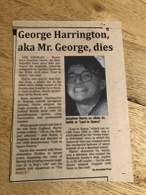

TIME TRAVELER DATABASE
TIME TRAVELER DATABASE
George Harrington
Time Traveler, Suspected Shape Shifter
1930s - 1990s(?)
Highlighted in the red square.
In 1996 on the now defunct forum Sir Steves Toy Guide, a user named "BoobaFett" made a thread in the off-topic section. "Just found this weird dude in my dads stupid photo book lol." What BoobaFett didn't realized was that this would be one of the biggest time traveler theories of all time (on this website, with the page reaching 90 views in one month!). After many attempts of asking BoobaFett to look for more photos of him that were mostly met with him questioning our sexuality, he finally gave in. A man I've found on several occasions yet have only seen his name mentioned once. His name is George Harrington.
The newspaper page offers little information, mostly sounding like gibberish. He seems to for a short time posed as an actor and was featured in a few Romance B movies.
Profile from his wedding photos, dated 1984.
We also have proof that he was married in the mid-80s with this, coming from a clergyman's files after Sir Steves Toy Guide forum user "SpockOClock" bribed him.
Amongst a crowd, presumably eating ice cream. Dated 1984.
There are many people with the name George Harrington, but there was one that was born in December 9th, 1976 and died December 10th, 1978 in Fort Wayne, Indiana. But when looking at the local hospital records of Fort Wayne, there is no reference to such file. It's widely assumed that this was George Harrington, who discovered his time traveling and shape shifting powers at the age of 1 day old.

Although his face is not visible, we believe he in the second in the front crossing his arms. My dad told me this was from World War I, but I think it was from World War II.
He's distracted by the pig by some sort of tablet? Could this be his teleporation device?
A curious photo of Harrison featured in a frame, while these teens get ready for prom. est. 1965
Pictured is BoobaFett's grandmother who is still alive. When asked about the picture, she mentioned that that was her uncle, who she only knew as "Crazy Ace", which she would always follow up with "because he always had an Ace of Spades with him". "He never hung around much that Crazy Ace, we called him that because he always had an Ace of Spades with him. But when we did find him, he was typically trying to gamble and throw dice at the sock hop." - Mrs. Elrich
For now, this is all we know about George Harrington, some might say he's still around. If you have more information, please e-mail me at drdrethechronic21@aol.com